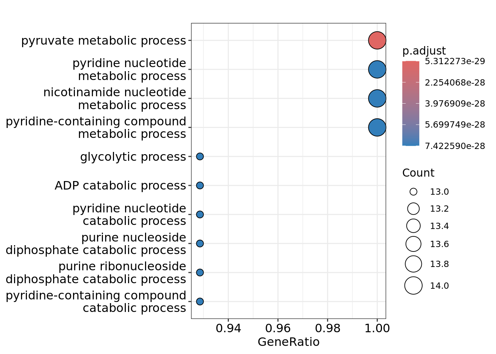
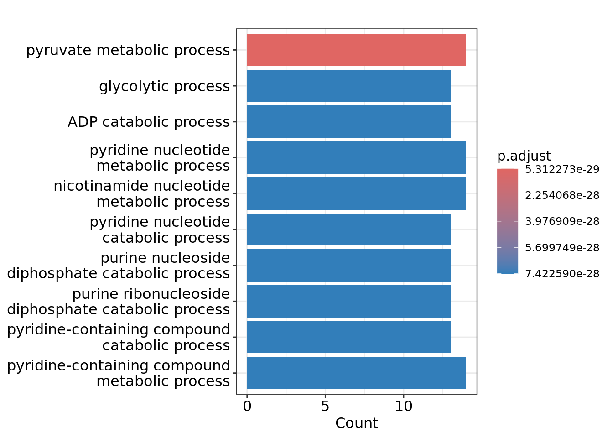
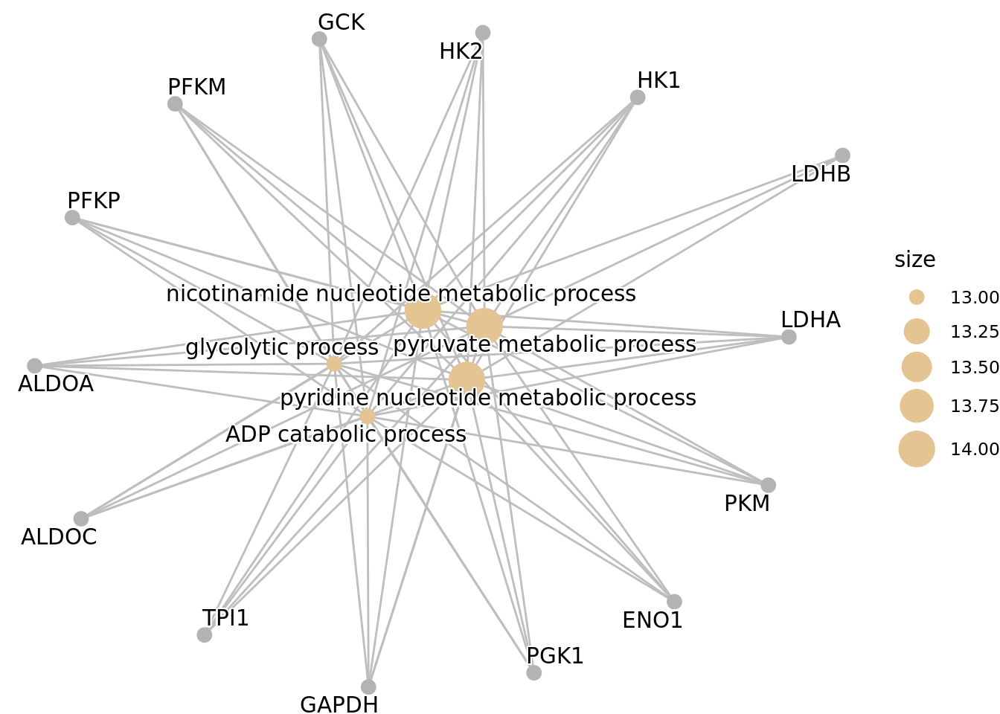

# Cargar clusterProfiler y un conjunto de datos de ejemplo
library(clusterProfiler)clusterProfiler v4.14.3 Learn more at https://yulab-smu.top/contribution-knowledge-mining/
Please cite:
S Xu, E Hu, Y Cai, Z Xie, X Luo, L Zhan, W Tang, Q Wang, B Liu, R Wang,
W Xie, T Wu, L Xie, G Yu. Using clusterProfiler to characterize
multiomics data. Nature Protocols. 2024, doi:10.1038/s41596-024-01020-z
Attaching package: 'clusterProfiler'The following object is masked from 'package:stats':
filterlibrary(org.Hs.eg.db)Loading required package: AnnotationDbiLoading required package: stats4Loading required package: BiocGenerics
Attaching package: 'BiocGenerics'The following objects are masked from 'package:stats':
IQR, mad, sd, var, xtabsThe following objects are masked from 'package:base':
anyDuplicated, aperm, append, as.data.frame, basename, cbind,
colnames, dirname, do.call, duplicated, eval, evalq, Filter, Find,
get, grep, grepl, intersect, is.unsorted, lapply, Map, mapply,
match, mget, order, paste, pmax, pmax.int, pmin, pmin.int,
Position, rank, rbind, Reduce, rownames, sapply, saveRDS, setdiff,
table, tapply, union, unique, unsplit, which.max, which.minLoading required package: BiobaseWelcome to Bioconductor
Vignettes contain introductory material; view with
'browseVignettes()'. To cite Bioconductor, see
'citation("Biobase")', and for packages 'citation("pkgname")'.Loading required package: IRangesLoading required package: S4Vectors
Attaching package: 'S4Vectors'The following object is masked from 'package:clusterProfiler':
renameThe following object is masked from 'package:utils':
findMatchesThe following objects are masked from 'package:base':
expand.grid, I, unname
Attaching package: 'IRanges'The following object is masked from 'package:clusterProfiler':
slice
Attaching package: 'AnnotationDbi'The following object is masked from 'package:clusterProfiler':
select# Lista de genes de ejemplo (genes diferencialmente expresados)
genes <- c("HK1", "HK2", "GCK", "PFKM", "PFKP", "ALDOA", "ALDOC", "TPI1",
"GAPDH", "PGK1", "ENO1", "PKM", "LDHA", "LDHB")
# Realizar ORA para términos de GO
ego <- enrichGO(gene = genes,
keyType = "SYMBOL",
OrgDb = org.Hs.eg.db,
ont = "BP", # Proceso biológico
pAdjustMethod = "BH",
qvalueCutoff = 0.05)
# Gráfico de puntos
dotplot(ego, showCategory = 10)
# Gráfico de barras
barplot(ego, showCategory = 10)
# cnetplot
cnetplot(ego, showCategory = 5, circular = TRUE, colorEdge = TRUE)